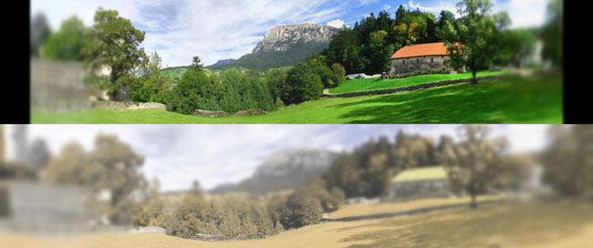
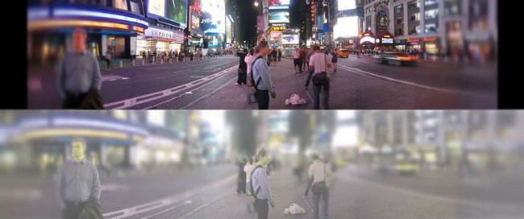

Para compreendermos como é que os gatos vêem o mundo,
convém percebermos primeiro um pouco da ciência por detrás da visão.
Os olhos contêm células chamadas fotorecetores, responsáveis por captar a luz que chega à retina,
convertendo-a em sinais elétricos que permitem que o cérebro reconheça as imagens que vemos.
Existem dois tipos de fotorecetores: os bastonetes e os cones. Os bastonetes são responsáveis pela visão periférica e noturna.
Os cones encarregam-se da visão diurna e perceção da cor.
A distinção das cores
É comum dizer-se que os gatos vêem apenas em tons de cinza, o que não é verdade, porém a nossa perceção das cores é muito mais eficaz do que a dos gatos. Isto deve-se ao facto de os nossos olhos possuírem cerca de 10 vezes mais cones do que os olhos destes felinos. A capacidade que estes animais têm de discriminar as cores é semelhante à de um humano daltónico. Conseguem distinguir bem os tons de verde e azul, porém o vermelho e o rosa confundem-se com o verde, e o lilás com o azul.
A qualidade das cores
Para além da escassa capacidade de discernir as cores, estas revelam-se mais turvas e menos vibrantes (menos saturadas) do que na visão dos seres humanos.